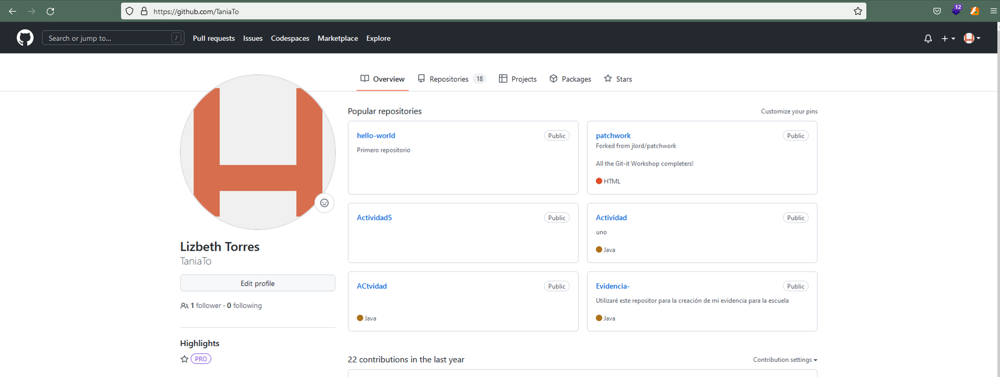
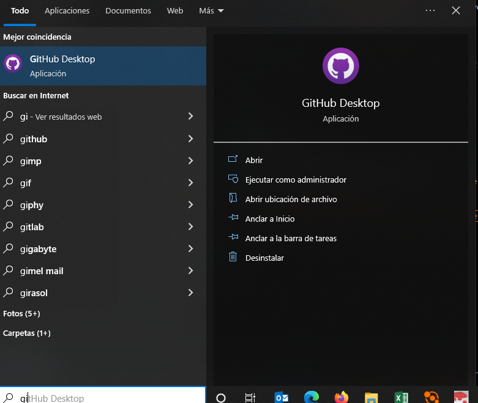
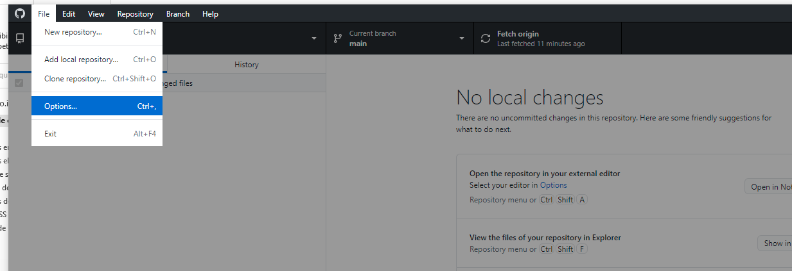
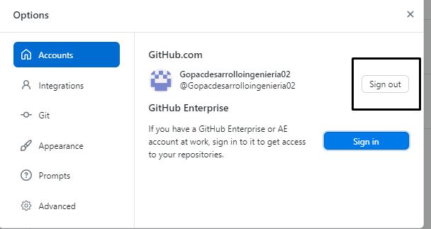
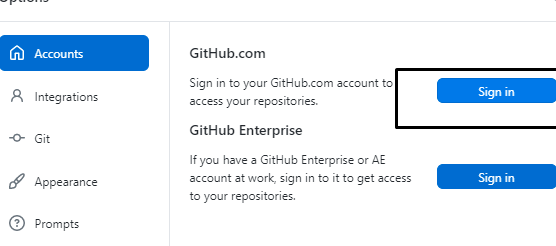
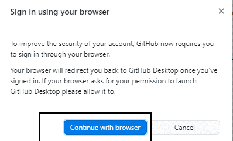

1.Ingresa a tu explorador de internet
NOTA:Dependiendo tu explorador que siempre estre predestinado abrir es donde ingresar a tu github
2.Despúes ingresa a tu github pero la aplicaión de tu computadora
3.Vete a File->Options
4.Te abrira esta ventana y aparecera tu cuenta en la que estas entonces para salirte darle clic en Sing out
5.Te abre otra ventana en esta mostrara de nuevo dale clic en sign in
6.Por ultimo te abrira esta ventana dale en el botón Continue With Brouse , se abrira en tu explorador github y tu cuenta
